SAGAS Y ARCOS
Capítulos, volúmenes y sagas
si haces click sobre los "arcos de..." te enviara a la descricion del arco en el cual clikeaste
| Mar de la Supervivencia: Saga de los Supernovas | Mar Final: Saga del Nuevo Mundo |
|---|
| Saga del East Blue | Saga de Arabasta | Saga de la Isla del Cielo | Saga de Water 7 | Saga de Thriller Bark | Saga de la Guerra en la Cumbre | Saga de la isla Gyojin | Saga de Dressrosa | Saga de los Cuatro Emperadores |
|---|
Arco Romance Dawn
(Capítulos 1 al 7, volumen 1) | Arco de Reverse Mountain
(Capítulos 101 al 105, volumen 12) | Arco de Jaya
(Capítulos 218 al 236, volúmenes 24 y 25) | Arco de Long Ring Long Land
(Capítulos 303 321, volúmenes 32 al 34) | Arco de Thriller Bark
(Capítulos 442 al 489, volúmenes 46 al 50) | Arco del Archipiélago Sabaody
(Capítulos 490 al 513, volúmenes 50 al 53) | Arco del regreso a Sabaody
(Capítulos 598 al 602, volumen 61) | Arco de Punk Hazard
(Capítulos 654 al 699 , volúmenes 66 al 70) | Arco de Zou (Capítulos 802 al 824, volúmenes 80 al 82) |
Arco de la ciudad Orange
(Capítulos 8 al 21, volúmenes 1 al 3) | Arco de Whiskey Peak
(Capítulos 106 al 114, volúmenes 12 al 13) | Arco de Skypiea
(Capítulos 237 al 302, volúmenes 26 al 32) | Arco de Water 7
(Capítulos 322 al 374, Volúmenes 34 al 39) | | Arco de Amazon Lily
(Capítulos 514 al 523, volúmenes 53 y 54) | Arco de la isla Gyojin
(Capítulos 603 al 653, volúmenes 61 al 66) | Arco de Dressrosa
(Capítulos 700 al 801, volúmenes 70 al 80)
| Arco de Whole Cake Island (Capítulos 825 al 902, volúmenes 82 al 90) |
Arco de Villa Syrup
(Capítulos 22 al 41, volúmenes 3 al 5) | Arco de Little Garden
(Capítulos 115 al 129, volúmenes 13 al 15) | | Arco de Enies Lobby
(Capítulos 375 al 430, volúmenes 39 al 44) | Arco de Impel Down
(Capítulos 524 al 548, volúmenes 54 al 56) | | | Arco del Levely (Capítulos 903 al 908, volumen 90) |
Arco del Baratie
(Capítulos 42 al 68, volúmenes 5 al 8) | Arco de la isla de Drum
(Capítulos 130 al 154, volúmenes 15 al 17) | Arco del regreso a Water 7
(Capítulos 431 al 441, volúmenes 45 y 46) | Arco de Marineford
(Capítulos 549 al 580, volúmenes 56 al 59)
| Arco del País de Wano (Capítulos 909 en adelante, volúmenes 90 en adelante) |
Arco de Arlong Park
(Capítulos 69 al 95, volúmenes 8 al 11) | Arco de Arabasta
(Capítulos 155 al 217, volúmenes 17 al 24) | | Arco de 3D2Y
(Capítulos 581 al 597, volúmenes 59 al 61) |
Arco de Loguetown
(Capítulos 96 al 100, volúmenes 11 al 12) |
Arco de romance Down
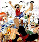El arco de Romance Dawn, también conocido como el arco del Capitán Morgan, es el primer arco argumental de la Saga del East Blue del manga y anime japonés One Piece. Esta saga contiene tres historias en una. La primera es la historia de cómo Monkey D. Luffy ganó sus poderes, un poco de su infancia y su sueño de ser el Rey de los Piratas. La segunda historia es el encuentro con Koby y Alvida y en la última historia, Luffy intenta que el Cazador de Piratas, Roronoa Zoro, se una a su tripulación mientras se ocupan de la Marine y el capitán Mano de Hacha Morgan.
El arco transcurre en tres localizaciones: Isla de Dawn (infancia de Luffy), isla Goat (enfrentamiento de Luffy contra Alvida) y Shells Town (enfrentamiento de Luffy contra el Capitán Morgan). Además, los flashbacks de Zoro ocurren en Shimotsuki.
Arco de la ciudad Orange
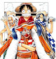El arco de Buggy «El Payaso», también conocido como el arco de la Ciudad Orange, es el segundo arco argumental de la saga del East Blue del popular manga y anime japonés One Piece.
Monkey D. Luffy y Roronoa Zoro se enfrentan a los Piratas de Buggy para rescatar a una agobiada ciudad y sus habitantes del tirano capitán Buggy, y también conocen a su futura navegante, Nami.
Arco de Villa Syrup
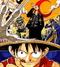El Arco del Capitán Kuro, también conocido como el Arco de la Villa Syrup, es el tercer arco argumental de la Saga del East Blue del manga y anime japonés de One Piece.
Monkey D. Luffy, Roronoa Zoro y Nami llegan a la Villa Syrup en busca de un barco y es ahí donde se encuentran con Usopp, el mentiroso local de la aldea. Esta vez los Piratas de Sombrero de Paja deben enfrentar y derrotar a Kuro y a sus Piratas Gato Negro, para salvar la vida de Kaya, la amiga de Usopp.
Arco del Baratie
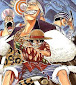El arco del Baratie, también conocido como el Arco de Don Krieg, es el cuarto arco argumental de la Saga del East Blue del popular Manga y Anime japonés de One Piece.
Los Piratas de Sombrero de Paja se encuentran con Johnny y Yosaku, dos cazarrecompensas que son antinguos compañeros de Zoro. Ellos los dirigen al restaurante marítimo flotante "Baratie", una especie de oasis flotante en el medio del océano donde se encuentran con su futuro cocinero, Sanji. Después de una serie de acontecimientos, el considerado pirata más fuerte del East Blue, Don Krieg, fija su mirada en el Baratie para reemplazar a su gran flota de barcos que fue destrozada por el Guerrero del Mar Dracule Mihawk y así el destino del Restaurante Baratie esta en juego.
Arco de Arlong Park
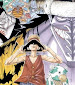El Arco de Arlong Park, también conocido como el Arco de Arlong, es el quinto arco argumental de la Saga del East Blue del popular manga y anime japonés de One Piece.
Después de que Nami robara el Going Merry; Usopp, Roronoa Zoro y Johnny, y más tarde Monkey D. Luffy, Sanji y Yosaku, la siguen hasta la Villa Cocoyasi, hogar natal de Nami, gobernada por el tirano gyojin, Arlong. Es aquí donde el pasado y los motivos verdaderos del actuar raro de Nami salen a la luz. Los Sombreros de Paja conocerán la triste historia de Nami y lucharan por liberarla de su pasado. Este arco transcurre en las Islas Conomi.
Arco de Loguetown
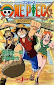El Arco de Loguetown es el sexto y último arco argumental de la Saga del East Blue del popular manga y anime japonés de One Piece.
Los Piratas de Sombrero de Paja hacen una última parada para abastecerse antes de entrar a Grand Line, en la última isla del East Blue, Loguetown, lugar donde nació y fue ejecutado Gold Roger. Durante su estancia en esta isla se encontrarán con viejos enemigos y conocerán a dos personajes importantes en la serie: Dragon y Smoker.
Arco de Reverse Mountain
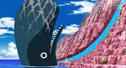El arco de Reverse Mountain, también conocido como el Arco de Laboon, es el séptimo arco argumental del popular manga y anime japonés de la serie One Piece. Así mismo, es el primer arco argumental de la saga de Arabasta.
Los Piratas de Sombrero de Paja deberán atravesar la Reverse Mountain para entrar en Grand Line, sin embargo, se encontrarán con un singular obstáculo al entrar a Grand Line, dando comienzo de esta manera a su aventura en el "Cementerio de Piratas". Además, a pesar de ser muy corto, este arco es indispensable para que un nuevo miembro se una a la banda más adelante.
Arco de Whiskey Peak
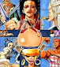El arco de Whisky Peak es el octavo arco argumental del popular manga y anime japonés de la serie One Piece. Así mismo, es el segundo arco argumental de la saga de Arabasta. Este arco transcurre principalmente en la isla de los Cactus, la primer ínsula visitada por los Sombreros de Paja en Grand Line.
Con un Log Pose ahora en mano, los Piratas de Sombrero de Paja se dirigen a Whisky Peak, una ciudad que acoge a los piratas con los brazos abiertos y los trata como celebridades. Obviamente, es demasiado bueno para ser verdad y los residentes de la ciudad son en realidad cazarrecompensas que pertenecen a una misteriosa organización que se convertirá en uno de los mayores enemigos de los Piratas de Sombrero de Paja.
Arco de Little Garden
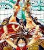El arco de Little Garden es el noveno arco argumental del manga y anime japonés de la serie One Piece. Así mismo, es el tercer arco argumental de la saga de Arabasta.
Little Garden es la segunda isla visitada por los Piratas de Sombrero de Paja en Grand Line. Es una isla de verano, que es despoblada salvo por los dinosaurios y los dos gigantes, Dorry y Brogy. Este arco fue dejado fuera del doblaje de 4Kids por causa de la violencia inevitable.
Arco de la isla de Drum
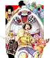El Arco de Drum es el décimo arco argumental del popular manga y anime japonés de la serie One Piece. Así mismo, es el cuarto arco argumental de la Saga de Arabasta.
Drum es la tercera isla visitada por los Piratas de Sombrero de Paja en el Grand Line, una isla con un crudo clima invernal. Durante este arco se introduce al futuro médico de los Piratas de Sombrero de Paja, al doctor Tony Tony Chopper, el cual conocen luego de que desviaran su rumbo hacia Alabasta para conseguir un médico que atendiera la fatal enfermedad de Nami.
Arco de Arabasta
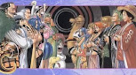El arco de Arabasta es el décimo primer arco argumental del popular manga y anime japonés de la serie One Piece. Así mismo, es el quinto arco argumental de la saga de Arabasta. La Isla Sandy, donde se ubica el Reino de Arabasta, es la cuarta isla visitada por los Piratas de Sombrero de Paja en el Grand Line. El reino también es conocido como el Reino de la Arena, y está gobernado por el rey Nefertari Cobra, el padre de Nefertari Vivi.
Los Piratas de Sombrero de Paja llegan por fin, junto a Vivi y Karoo, al Reino de Arabasta, y comienzan su recorrido por el desierto para poder llegar a la ciudad de Alubarna, antes de que una guerra masiva estalle entre el Ejército Real y el Ejército Rebelde. Sin embargo el verdadero causante de la guerra, Mr. 0 (el Guerrero del Mar Crocodile) y el resto de los agentes oficiales de Baroque Works harán todo lo posible para impedir que los Piratas de Sombrero de Paja y Vivi interfieran en su plan de conquistar Arabasta.
Arco de Jaya
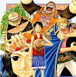El arco de Jaya es el décimo segundo arco argumental del popular manga y anime japonés de la serie One Piece. Así mismo, es el el primer arco argumental de la Saga de la Isla del Cielo.
Jaya es la quinta isla visitada por los Piratas de Sombrero de Paja en Grand Line. La isla se divide principalmente en dos partes, el lado oeste que está casi completamente formado por bosques tropicales en la que habitan diversas criaturas, especialmente insectos, y el lado este, lugar donde se ubica la ciudad de Mock Town, una ciudad sin ley llena de piratas.
Arco de Skypiea
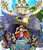El Arco de Skypiea es el 13º arco y el 2º y ultimo de la Saga de la Isla del Cielo del Manga y Anime One Piece. Los Piratas del Sombrero de Paja finalmente llegan a la isla del cielo Skypiea, es la sexta isla visitada por los Piratas del Sombrero de Paja en el Grand Line. La isla se divide principalmente en dos partes, la Isla de los Ángeles, en la cual viven los "ángeles" y Upper Yard, otra isla la cual es en realidad una gran parte de Jaya, en donde se ubicaba la Ciudad de Oro. Ademas los Piratas del Sombrero de Paja deberán enfrentarse al Autoproclamado Dios Enel, quien amenaza con destruir toda Skypiea.
Arco de Long Ring Long Land
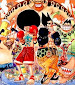El arco de Long Ring Long Land, también conocido como arco del Davy Back Fight es el 14º arco y el 1º de la saga de Water 7 del manga y anime One Piece. Luego de caer de Skypiea los Piratas de Sombrero de Paja llegan a la isla de Long Ring Long Land. Lugar donde se centra un concurso entre los Piratas de Sombrero de Paja y los Piratas de Foxy, llamado el «Davy Back Fight». Es también el escenario de la lucha entre el almirante Aokiji y Monkey D. Luffy.
Arco de Water 7
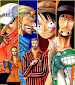El arco de Water 7 es el décimo quinto arco y el segundo de la saga de Water 7. Water 7 es la séptima isla en la que los Piratas de Sombrero de Paja llegan en Grand Line. Se trata de una metrópolis de agua construida sobre una ciudad hundida anterior a ella. Todo parece ir bien para los Piratas de Sombrero de Paja hasta que una organización secreta, llamada CP9, se cruza en su camino.
Arco de Enies Lobby
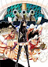El Arco de Enies Lobby es el décimo sexto arco y el tercero de la Saga de Water 7 del manga y anime One Piece. Enies Lobby es la octava isla visitada por los Piratas de Sombrero de Paja en Grand Line. Este arco también parece ser un punto de avance para cada uno de los Piratas de Sombrero de Paja, ya que casi todos ellos de alguna manera se volvieron mas fuertes. En este arco, los de Sombrero de Paja también dicen adiós a su amado barco, el Going Merry.
Arco del regreso a Water 7
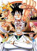El arco del regreso a Water 7, también conocido como arco post-Enies Lobby o arco del Thousand Sunny, es el decimoséptimo arco de la serie y el cuarto y último de la saga de Water 7 en el manga y el anime de One Piece. Durante su estancia en Water 7, tras escapar exitosamente de Enies Lobby, los Piratas de Sombrero de Paja son visitados por la Marine. Unos días antes Ace al fin encuentra a Barbanegra y lucha contra él en la isla Banaro. En este arco Franky se une a los Piratas de Sombrero de Paja como el carpintero naval de abordo.
Arco de Thriller Bark
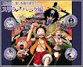El Arco de Thriller Bark, es el décimo octavo arco, así como el único arco de la Saga de Thriller Bark, del manga de One Piece.
Los Piratas de Sombrero de Paja , durante su viaje en el Florian Triangle llegan a una isla llamada Thriller Bark, en el que sus sombras son robadas por el Guerrero del Mar Gecko Moria y deben darse prisa para recuperarlos antes de que salga el sol. Los Piratas de Sombrero de Paja también ganan un nuevo compañero para su tripulación, un esqueleto viviente llamado Brook quien se convierte en su músico.
Arco del Archipiélago Sabaody
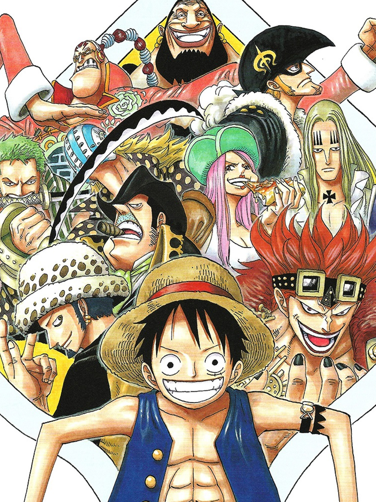El Arco del Archipiélago Sabaody es el 19º arco del manga y anime One Piece, y el primero de la Saga de la Guerra en la Cumbre. Comienza justo cuando los Piratas de Sombrero de Paja se dirigen al Nuevo Mundo disponiéndose a bajar a la Isla Gyojin.
todo cambia cuando al llegar luego de lastimar un dragon celestial nuestros protagonistas se ven puestos en una gran batalla entre los piratas de la peor generacion, y los marines, esta misma pelea los marcaria para siempre
Arco de Amazon Lily
 El Arco de Amazon Lily es el 20º arco del manga y anime One Piece, y el segundo arco de la Saga de la guerra contra Barbablanca. Empieza después de que Bartholomew Kuma, separa a los Piratas del Sombrero de Paja. Luffy llega a la isla de las mujeres, Amazon Lily donde conoce a la Guerrera del Mar Boa Hancock quien, tras algunos acontecimientos, le ayudará a infiltrarse en Impel Down para rescatar a su hermano Ace "Puño de Fuego".
El Arco de Amazon Lily es el 20º arco del manga y anime One Piece, y el segundo arco de la Saga de la guerra contra Barbablanca. Empieza después de que Bartholomew Kuma, separa a los Piratas del Sombrero de Paja. Luffy llega a la isla de las mujeres, Amazon Lily donde conoce a la Guerrera del Mar Boa Hancock quien, tras algunos acontecimientos, le ayudará a infiltrarse en Impel Down para rescatar a su hermano Ace "Puño de Fuego".
Arco de Impel Down
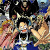El arco de Impel Down es el 21ª arco del Manga y Anime de One Piece, y el tercer arco de la Saga de la Guerra en la Cumbre. Transcurre inmediatamente después del arco de Amazon Lily. Luffy, con la ayuda de Boa Hancock se infiltrará en Impel Down para rescatar a su hermano Ace, en medio de la infiltración se encuentra con varios antiguos enemigos que se alían con él para escapar de la gran prisión. Cuando los descubren y consiguen llegar al último nivel, Ace es trasladado a Marineford para ser ejecutado, tras esto, más de 200 presos se unen a la fuga y escapan de Impel Down. Barbanegra también llega a la prisión para liberar a los presos más fuertes del último nivel provocando la derrota del Alcaide Magellan y su intento de suicidio.
Arco de Marineford
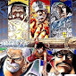El arco de Marineford es el 22ª arco del manga de One Piece y el penúltimo arco de la saga de la Guerra en la Cumbre. Transcurre inmediatamente después del Arco de Impel Down.
Al no poder llegar hasta Ace antes de que fuera trasladado a Marineford, Luffy junto con los fugitivos de Impel Down (entre los que se encontraban Emporio Ivankov, Inazuma, Crocodile, Jinbe, Galdino, Daz Bonez y Buggy) se dirigen a Marineford para que Luffy pueda rescatar a su hermano. Sin embargo, las probabilidades para rescatarlo se dividen a la mitad con el enfrentamiento de la banda de Barbablanca, uno de los Cuatro Emperadores, contra los Los Siete Guerreros del Mar y la Marine.
Arco de 3D2Y
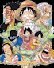El arco de 3D2Y es el 23º arco del manga y del anime One Piece, es también el último arco de la saga de la Guerra en la Cumbre y de la primera mitad de la serie.
Este arco se divide principalmente en dos partes, primero el trauma emocional de Luffy, tras perder a su hermano en la guerra, lo que le lleva a recordar todo su pasado, de cuando conoció a Ace, y a otro niño llamado Sabo, el como los tres formaron amistad, y se decidieron convertirse en hermanos. Por otro lado, narra los acontecimientos y las consecuencias tras la guerra, el como afecto la muerte de Barbablanca al mundo, y la decisión de Luffy para decidir su futuro y el de su tripulación.
Arco del regreso a Sabaody
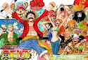El arco del regreso a Sabaody es el 24º arco del manga y anime One Piece y el 1º arco de la Saga de la Isla Gyojin.
Luego de dos años los somprero de paja por fin se reencuentran en la isla en la que se separaron, todos vuelven con mejores versiones de ellos mismos listos para partir hacia la Isla Gyojin
Arco de la isla Gyojin
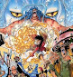El arco de la isla Gyojin es el 25º arco de One Piece y el último de la saga de la isla Gyojin. En este arco los Piratas de Sombrero de Paja al fin viajan hacia la isla Gyojin.
Tras causar disturbios en el archipiélago sabaody, los mugiwaras se dirigen a la última isla antes de entrar al Nuevo Mundo, La isla Gyojin. Allí nuestros protagonistas se encontrarán con el ex shichibukai, Jimbei y conocerán el pasado que acoge a esta antigua isla, el cual está plagado de racismo, esperanza, promesas y profecías. Luego se enfrentarán a los nuevos piratas Gyojin para salvar a esta isla de una inminente destrucción.
Arco de Punk Hazard
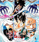El Arco de Punk Hazard es el 26ª arco de la serie y el 1ª arco de la Saga de Dressrosa. Tras llegar al Nuevo Mundo, los Piratas de Sombrero de Paja reciben una llamada extraña de una isla cercana no detectable por el Log Pose llamada Punk Hazard. En la isla conocerán a Caesar Clown un antiguo científico del Gobierno Mundial que trabaja para los bajos fondos, es decir, para el misterioso "Joker". Volverán a ver al nuevo Guerrero del Mar, Trafalgar Law, quien ayudó a Luffy tras la Guerra de Marineford y harán una alianza para conseguir el SAD, una sustancia usada por "Joker" para hacer frutas del diablo artificiales. Para hacerlo tendrán que aliarse también con el Vicealmirante Smoker, quien quiere detener al traidor del G-5, al Vicealmirante Vergo quien estaba, en realidad, a las órdenes de "Joker".
Arco de Dressrosa
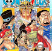 El arco de Dressrosa es el 27º arco del manga y anime One Piece, y el segundo arco de la Saga de Dressrosa. Sigue con la historia tras la huída de Punk Hazard después de los sucesos durante el Arco de Punk Hazard.
Luego de salir de Punk Hazard y los piratas del Sombrero de Paja y Heart formaran una alianza para derrotar a Kaido, es hora de moverse junto con Kin'emon y Caesar hacía Dressrosa y derrotar el rey de allí, un miembro de los Shichibukai, Donquixote Doflamingo.
Arco de Zou
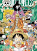El Arco de Zou es el vigesimoctavo arco de la serie y el primero de la saga de los Cuatro Emperadores.
Tras la derrota de Donquixote Doflamingo, los Piratas de Sombrero de Paja, Trafalgar Law y Kin'emon continúan su viaje hacia Zou para encontrarse con Sanji y los demás. Zou es la tercera isla que visitan los Piratas de Sombrero de Paja en el Nuevo Mundo.
Arco de Whole Cake Island
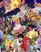El arco de Whole Cake Island , también conocido como arco de Totto Land es el vigesimonoveno arco de la serie y el segundo de la saga de los Cuatro Emperadores. Supone la continuación de los sucesos acaecidos en el arco de Zou.
Tras ser informado de que Sanji decidió dirigirse voluntariamente a Whole Cake Island junto a Capone Bege con la intención de a casarse con una de las hijas de la familia Charlotte, Luffy decide partir hacia dicha isla guiado por Pekoms y un pequeño grupo de compañeros de tripulación y aliados mink. Su objetivo: recuperar a Sanji sin provocar un conflicto con una de los Cuatro Emperadores, Charlotte Linlin.
Arco del Levely
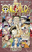El arco del Levely es el trigésimo arco de la serie y el tercero de la saga de los Cuatro Emperadores. Supone la continuación de lo acontecido durante el arco de Whole Cake Island.
Después de que el mundo supiese las acciones cometidas por los Piratas de Sombrero de Paja contra los Piratas de Big Mom, las familias reales de todo el mundo se reúnen para el Levely.
Arco del País de Wano
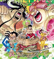El arco del País de Wano es el trigésimo primer arco de la serie y el cuarto de la saga de los Cuatro Emperadores.
Luego de la gran reunión de todos los reinos en Mary Geoise, las decisiones políticas que tomaron, las revelaciones que hemos visto en el Levely y luego de que el grupo de Luffy invadió el territorio de Big Mom e hizo retumbar al mundo con la noticia, ya es hora de volver a reunirse con los demás miembros de la tripulación y la alianza para derrotar a Kaido y poder abrir las puertas del país.
volver al inicio